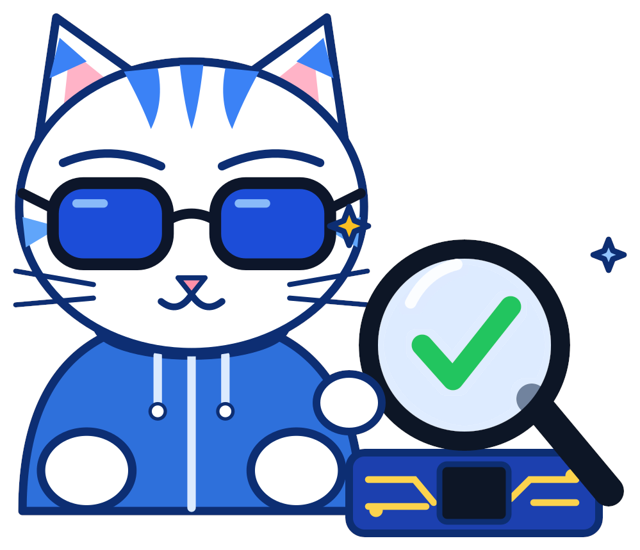
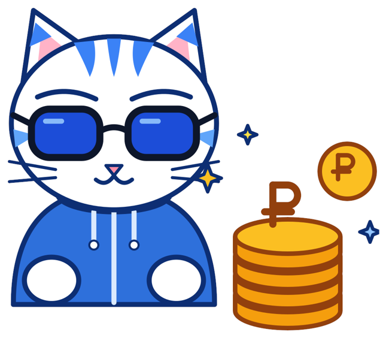
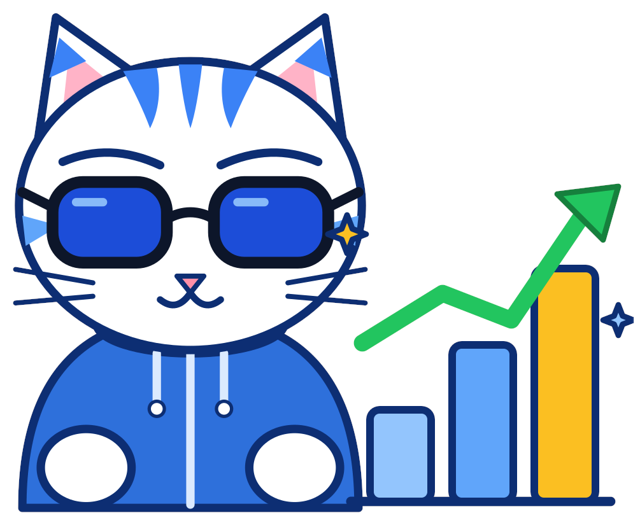

НАПРАВЛЕНИЕ 1
НАПРАВЛЕНИЕ 1Монтаж плат
Ручной и SMD-монтаж, допайка выводных компонентов, вязка кабельных жгутов.
Учебно-производственное конструкторское бюро на базе КСИПТ. Студенты работают над реальными заказами по электронике под руководством наставников. Колледж получает современную базу практики, а малый бизнес получает прототипы и небольшие партии устройств.
Старт проекта: 12 месяцев и 5 000 000 ₽ стартового бюджета.
Мы предлагаем создать на базе КСИПТ учебно-производственное конструкторское бюро. Это площадка, где студенты работают над реальными заказами по электронике под руководством наставников. Для колледжа это современная база практической подготовки, для малого бизнеса возможность заказать прототип или небольшую партию устройств.
первый цикл запуска и развития
стартовый бюджет по бизнес-плану
помещение в колледже
восемь мест монтажа и два места разработки
Студентам нужен опыт, который можно показать работодателю, а получить его только на учебных заданиях сложно. Небольшим компаниям и частным разработчикам нужна помощь с прототипами и малыми партиями, но крупным заводам такие заказы невыгодны. Бюро соединяет эти две задачи на одной площадке колледжа.
Студенты
 Заказчики
Заказчики
типовая партия, средний чек 6 000–30 000 ₽
Все работы выполняем только под заказ. Начинаем с тех, которые соответствуют оборудованию и подготовке команды. Проектирование печатных плат в услуги не входит.
НАПРАВЛЕНИЕ 1Ручной и SMD-монтаж, допайка выводных компонентов, вязка кабельных жгутов.
 НАПРАВЛЕНИЕ 2
НАПРАВЛЕНИЕ 2Изготовление корпусов под заказ по вашему ТЗ.
 НАПРАВЛЕНИЕ 3
НАПРАВЛЕНИЕ 3Прошивки для микроконтроллеров и тестовые утилиты.

НАПРАВЛЕНИЕ 4Новое изделие с нуля: от ТЗ и Gerber до опытного образца. От 16 000 ₽.
Бизнес-план предусматривает помещение 80 м² в колледже, восемь мест монтажа и два места проектирования. Для работы понадобятся лаборатория полного цикла, SMD-монтажный автомат, микроскопы, измерительно-диагностическое оборудование и оснащённые рабочие места. Студенты работают под руководством руководителя и мастера производственного обучения.
Каждое изделие перед передачей клиенту проходит визуальный контроль под микроскопом и проверку мультиметром и осциллографом.
Это план оснащения, а не сведения об уже имеющихся площадях и оборудовании. Условия допуска к работам, в том числе для несовершеннолетних студентов, утверждает колледж с учётом возраста и требований безопасности.
Подбор и оформление договоров с предприятиями-партнёрами.
Выполнение внутриколледжных проектов: учебные стенды, платы для курсовых и дипломных работ.
Сайт с калькулятором стоимости, социальные сети, экспертные страницы на Хабре и профильных тех-платформах для привлечения B2B-клиентов.
Малые партии и прототипы, ориентир по срокам 2–4 дня при наличии деталей.
Обращаемся к предприятиям из базы потенциальных заказчиков, малому бизнесу и разработчикам.
Понятное ТЗ, расчёт цены и согласованные сроки.
Фото изделий и результаты проверки качества.
Обратная связь клиента и рекомендации.
Сайт и ВКонтакте покажут услуги, процесс работы и готовые изделия.
Помещение, вентиляция и закупка оборудования.
Наладка, обучение и пробные изделия.
Договоры с клиентами и приёмка результатов.
Рост объёмов и повторные заказы.
Сроки зависят от утверждения финансирования.
стартовый бюджет по бизнес-плану

| № | Оборудование | Стоимость |
|---|---|---|
| 1 | Лаборатория полного цикла | 3 000 000 ₽ |
| 2 | SMD-монтажный автомат | 1 400 000 ₽ |
| 3 | Измерительно-диагностическое оборудование | 350 000 ₽ |
| 4 | Оснащение рабочих мест и мебель | 150 000 ₽ |
| 5 | ИТ-инфраструктура, инструменты и оборотные статьи | 100 000 ₽ |
| Итого бюджет запуска | 5 000 000 ₽ |
5 000 000 ₽ — это сумма на запуск. Для текущей работы первых двух лет бизнес-план отдельно предусматривает дополнительное финансирование колледжа.
плановая выручка за 2027–2028 годы
Выручку направим на материалы, оплату работы студентов и наставников и развитие площадки. Услуги: монтаж плат, корпуса, прошивки и прототипы NPI. Клиенты: разработчики, стартапы и небольшие предприятия.

Это прогноз, а не полученная выручка. Она пока не покрывает все текущие расходы, поэтому первые два года проект требует софинансирования колледжа. Срок окупаемости зависит от количества заказов и клиентов.
В 2027 году ожидаем 1–2 NPI-заказа в месяц: мастерская только запускается, нужно отладить процессы, наработать доверие предприятий и собрать портфолио. С 2028 года 1,2–1,5 заказа в месяц, то есть около 14–18 NPI-заказов в год.
| Год | Заказов в месяц | Расчёт при 16 000 ₽ за NPI | Выручка |
|---|---|---|---|
| 1-й | 1 | 1 × 12 × 16 000 | 192 000 ₽ |
| 2-й | 1,35 | 1,35 × 12 × 16 000 | ≈ 259 200 ₽ |
| 3-й | 1,4 | 1,4 × 12 × 16 000 | 268 800 ₽ |
Типовые заказы на монтаж (партия 10–50 плат по 600 ₽ за плату) дают средний чек 6 000–30 000 ₽. Это прогноз, а не гарантированная выручка.
Следующий шаг: подтвердить финансирование, закрепить наставников и договориться о пилотных заказах.